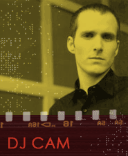

Fusing, or mixing jazz with other musical styles is nothing new. Trumpet great Dizzy Gillespie mingled bebop and Cuban musical styles to create a potent mix in the 1950s. Miles Davis, one of jazz's greatest innovators, began fusing jazz with funk, popular music, and world traditions starting in the late 1960s. Hyperkinetic jazz guitar virtuoso John McLaughlin mixed rock into his 1970s Mahavishnu Orchestra's performances.
Jazz was not alone in this sort of experimentation. Jamaican artist Bob Marley fused roots reggae with funk in his classic 1977 Exodus release. Others before him had mixed Jamaican music with soul. Prog rock groups like Yes, Tangerine Dream, Emerson, Lake & Palmer mixed pop music with classical or art music. Even country music's rockabilly, which mixed country, electric rhythm and blues, and boogie-woogie, became better known as 1950s rock 'n' roll.
However, recent remix efforts in jazz, which evolved from earlier Jamaican and American hip-hop cut 'n' mix, have brought some startling changes to jazz. (Please click on the hyperlinked terms whenever you see them for definitions, links to articles that you must read, or recorded performances).
Let's start things out with a 2004 remix release by DJ Cam of a classic Donald Byrd recording of "The Emperor." Listen and just take things in. While doing so, note the groove or beat that DJ cam uses. Try also to track changes in the piece; when different sections appear to begin and when melodies return.
Listen to DJ Cam's remix of Donald Byrd, "The Emperor" featuring Erik Truffaz (2004).
DJ Cam is a Paris-based hip-hop and remix artist catering to chill-out audiences. He has been influenced by beats 'n' samples producers Rakim, DJ Premier, and Prince Paul and is stylistically close to work by DJ Shadow and DJ Krush (Cooper [n.d.]). DJ Cam first appeared on the recording scene with his 1994 release Underground Vibes and has followed up with Mad Blunted Jazz (1996), Substances (1997), DJ Kicks (1998), The Beat Assassinated (1998), French Connection (2000), a three-CD set entitled The Loa Project (2000), and jazz remixes on Honey Moon (2001), Soul Shine (2003) and most recently Liquid Hip Hop (2004). DJ Cam has since placed tracks on Headz Records compilations, collaborated on remixes with DJ Krush and Snooze, and has remixed works by Tek 9 and la Funk Mob.
Below is a listening chart, or diagram of the piece. First, though, read through the discussion below on times cues, form, and comments as found in listening charts in this course.
TIME CUE
In the first column, you will see the time cues ( 1:05 , for example) that will help you keep your place—use the time counter on your MP3 pop-up window.
FORM
The next column lists the form (A, B, etc.), if we discuss it, which is then followed by the length of that section in measures (mm) or bars. All examples are four beats to the measure, unless stated otherwise.
The first time we encounter a section of the piece, it will be given an alphabetical designation (A, for example). If that section returns unaltered, then A will be cited again. If the A material is slightly modified, it will be designated A' (A prime) or A'' (A double prime in the next instance) and so forth. If the material is different from any other heard to that point in the piece, then it is given the next letter (B, for example).
We might find the following in a listening chart.
A 8mm
B 8
C 8
B 8
A' 8
The first section of eight measures (A) is followed by different material (B) for eight measures. Different material yet again (C) follows for eight measures and the B section returns for eight measures. The piece closes with a modified form of the A material (A') for eight measures.
COMMENTS
The final column lists observations about that section, changes of instrumentation, and so forth.
Follow the listening chart below and listen again to DJ Cam's remix of Donald Byrd, "The Emperor" featuring Erik Truffaz (2004).
TIME CUE FORM COMMENTS
0:00-0:22 Intro 8 mm trumpet solo (Truffaz)
0:22-0:43 A 8 groove kicks in and a rap-over announces 'Donald
Byrd' and this as DJ Cam's remix
0:43-1:03 B 8 add Erik Truffaz, trumpet
1:03-1:24 C 8 remix of main tune (Donald Byrd, trumpet)
1:24-1:45 C 8 main tune repeated
1:45-2:06 A' 8 rap over with trumpet (Truffaz)
2:06-2:27 C 8 return of main tune (Byrd)
2:27-2:48 C 8 repeat main tune with trumpet solo (Truffaz)
2:48-3:09 B' 8 trumpet solo (Truffaz) with bass-drum groove
3:09-3:29 8 transition
3:29-3:50 A'' 8 groove, rap over, trumpet
3:50-4:01 A''' 4 groove, rap over, trumpet
4:01-end Outro trumpet solo (Truffaz)
The Intro is eight measures long, features an unaccompanied trumpet solo by Erik Truffaz, and is moving at the same tempo that we will encounter in the next (A) section of the piece (although you might have difficulty counting the absent beat in the Intro). Even though this is a remix of a recording by trumpeter Donald Byrd, we do not yet hear him.
Trumpeter Eric Truffaz has been awarded France 's prestigious jazz award, the Prix Special, by the France's Jury du Concours National de la Defense in 1991. He records on Blue Note in both more traditional jazz and in hip-hop/remix styles (Seida and Campbell [n.d.]).
DJ Cam also added record scratches, Fender rhodes electric piano, strings, and synthesizer tracks. Only in section C do we hear a remix of the original Donald Byrd recording of "The Emperor," which first appeared on his 1971 album entitled Ethiopian Knights. The B sections of the piece features a new bass-drum groove or rhythm on a single chord that is not found on the Byrd original over which DJ Cam raps.
Overall, the recording is built up of regular, eight bar sections arranged in a retrograde symmetrical pattern of ABCCA'CCB'A"' (as if a mirror was placed at the central A' section and the pattern reverses itself: ABCC—A'—CCB'A'"). The final A''' is functionally part of the ending, being only four bars long, which gives way to the brief Outro that, too, mirrors the Truffaz solo trumpet of the Intro.
his is a very brief walk-through of this particular remix. We will discuss other remixes that are much more irregular and complex that this recording in a late Topics section of the course. Before diving in more deeply, though, let's look at some of the roots of remix by going back to explore some early jazz cut 'n' mix.